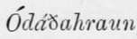
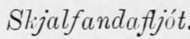
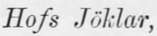
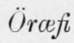

The Probable Genesis Of Askja And Iceland. Part 9
Description
This section is from the book "Askja: Iceland's Largest Volcano", by W. G. Lock. Also available from Amazon: Askja: Iceland's Largest Volcano.
The Probable Genesis Of Askja And Iceland. Part 9
This, I respectfully submit, is the probable history of the volcano, which in the preceding pages I have attempted to describe.
Hitherto, with the exception of the Oddftahraun and the Vatna Jokull, I have said but little with reference to the extent of the lava-covered tracts and immense glaciers of Iceland, nor mentioned the area of the deserts of volcanic sand and rocky debris lying in the interior west of the Oddtiahraun, or of the elevated moorlands where the Icelanders pasture their sheep in summer. I will now give these particulars, as their omission would render this brief and incomplete geological account of the island still more so. The area of Iceland is given by Gunnlaugsson as 1,867 Danish square miles = about 38,000 English: nearly one-seventh of which consists of Jdklar, or glacier-covered heights, the Vatna Jokull being credited, as before stated, with an area of 3,000 square miles, the Hqfs Jokull with 500, Lang Jokull with 440, the group of Jdklar in the south, of which the Hyrdal's Jokull is the chief, with about 350, and the Drdmga and Gldmu Joldar, lying on the north-west peninsula, with 400. The ice-clad mountain masses mentioned will be found upon examination, I think, to consist mainly of fragments of the miocene plateau, though in the Vatna Jbkidl group, it is certain, there are some of post-tertiary formation, but these have been before alluded to. The area of the lava deserts, i.e. tracts covered with rugged beds of lava that has welled forth from rifts or flowed from volcanic mountains in quite recent times (hundreds of miles have been so covered since the settlement of Iceland), is computed at 2,400 square miles, of which the Oddfiahraun is credited with half, while the lava-covered tract round Hekla is said to be but 240 square miles in extent. In the south-western portion of the island, between the capital and the south coast, there are over 500 square miles of country covered with lava; and between the M'jrdas Johdl and the there are the tracts covered with the lava-floods that there streamed forth in 1783, two entire river valleys, and over 200 square miles of lowlying land!
The area of the sandy, stony deserts of the interior may be set down at the least at 5,000 square miles, and they are slowly but surely increasing in extent, as will be hereafter seen. The two largest are the Sprengisandr and Storisandr, and these cover the surface of the elevated inland plateau on the west of the  , from which the one first named is separated by the  , The boundaries of the two deserts where they join are the rivers draining the Lang and  whose miocene foundations rise through the post-tertiary plateau on the south of the deserts : in each of which, by-the-bye, is a tract about thirty square miles in extent, covered with lava that has welled forth from rifts. I must not omit to state that south of the Vatna JoJcull there is a tract of sand quite 200 square miles in extent, lying but little above sea-level; it is named the SleetfSarwr-sandr, and is the detritus of the glaciers.
With reference to the moorlands and pastures (there is no arable land), Professor Johnstrup says: 1 It is exceedingly difficult to give, even approximately, an estimate of the area of the pasture lands of Iceland, as these imperceptibly run into extensive heaths with a most meagre grass growth. The area of the pasture land is usually estimated at 746 (Danish = 15,000 English) square miles, but this includes all that can by any means be brought under this heading.
This is, unquestionably, an over-estimate, notwithstanding that a large extent-possibly 3 to 4,000 square miles-of the eastern part of the island is elevated moorland, for year after year the area of the pasture land is decreasing, while that of the sand deserts is increasing-every gale of wind sweeping over the latter, when uncovered by snow, spreading over the former a thin covering of wind-borne sand ; and it is impossible to travel far, especially in the vicinity of the larger deserts, without coming across extensive tracts of moorland buried to a depth of several inches, which but a few years since nourished a growth of stunted birch and willows, whose stems project through the black sand bleached and dead. With reference to the thousand square miles or so of moorland in the east, buried under pumice by the 1875 eruptions, I think they will only remain useless as pasture land for a few years, the expansive action of the frost upon the rain and snow water within the porous pumice will soon degrade it into fertilizing soil, and the grass growth here will be richer than ever. There is no great depth of soil upon the elevated moorlands : we saw in the Myvatu's  that there was but a depth of five feet, and that is about the average.
The glaciers, lava and sand deserts, moorlands, and pastures thus cover about 28,000 square miles, and the remaining 10,000 consist chiefly of mountain masses varying in altitude from 2,000 to 3,500 feet, snow-covered for nine months out of the twelve.
From the above account of the superficial physical features of the island, and the description of the journey inland to Asl'ja, the reader will be able to form some idea of Iceland ; of the wild weirdness of its landscapes, where widely extending ice-clad mountains rise from fire-blasted deserts of lava, volcanic-ash and sand, resting upon an elevated plateau whose rocky foundation is shivered in all directions with deep earthquake rifts; of the ice and snow-clad remnants of the miocene plateau, whose rocky buttresses on the north have withstood the raging of the Arctic waves through sunlit summer night and sunless winter day from a period when man was not; of the grassy oases amid the black and sterile plains where stand the homesteads of the Icelanders ; a race as patriotic as the Swiss, and more hardy, who, in defiance of volcanic eruptions and earthquakes, and a hyperborean climate, cling to the island home of their forefathers, and live a peaceful, contented, pastoral life ; worshipping God with all the earnest simplicity of the Lutheran religion, and hospitably entertaining the stranger that may come among them, placing at his disposal the best room in the house, which is everywhere reserved as a ' guestroom.'
Continue to: